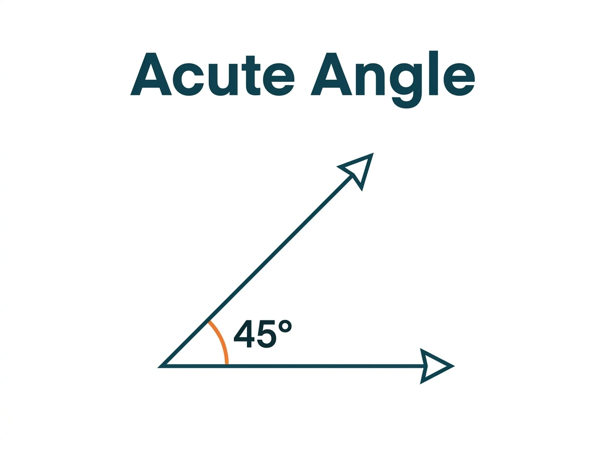
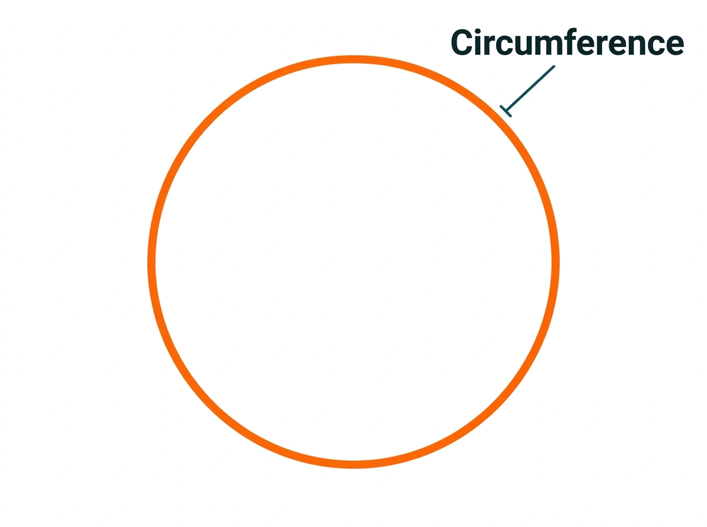
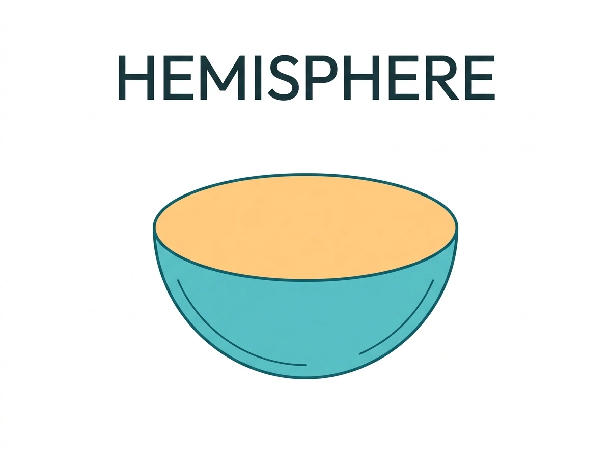
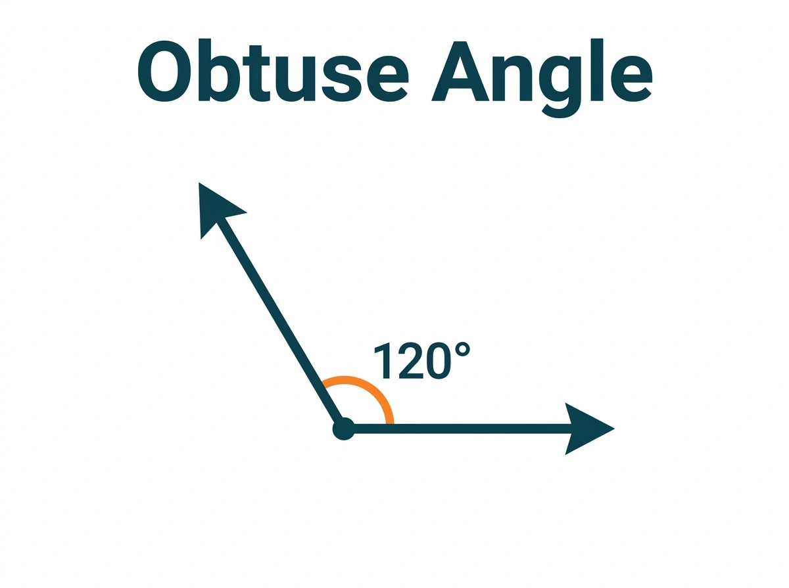
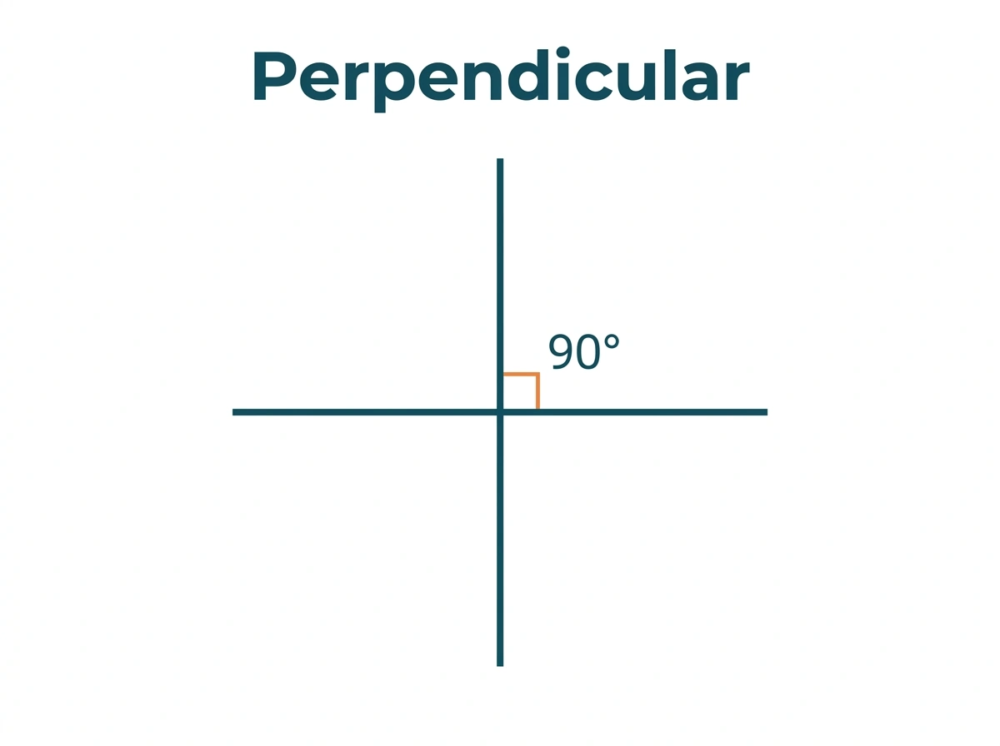
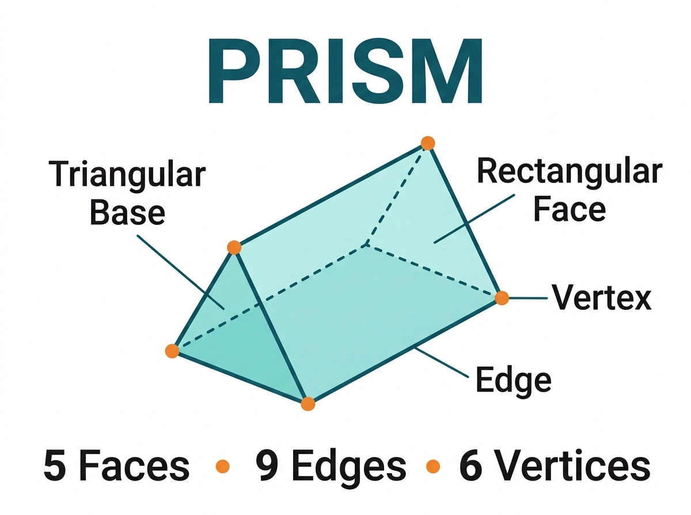
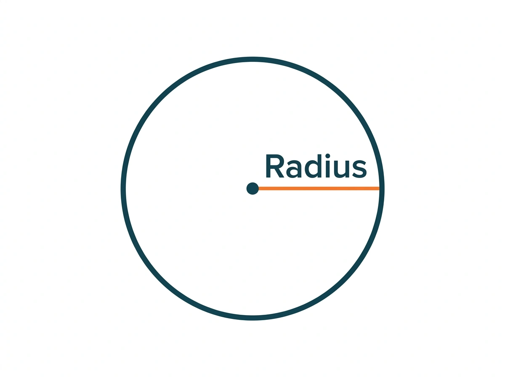
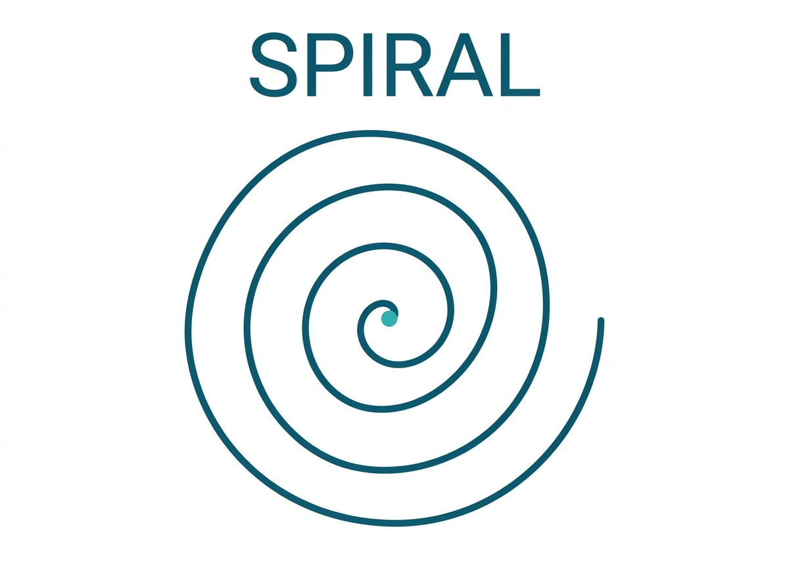
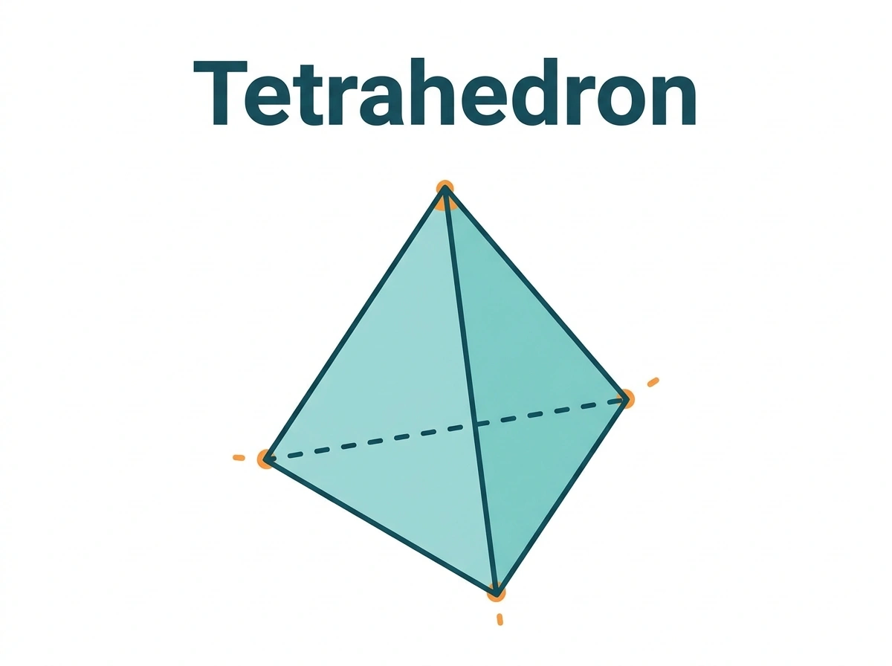

Two teal rays meet at a shared vertex, with an orange arc and a 45° label inside the acute opening.
AVIF companion

An orange circle outline is identified by a callout labelled Circumference; its interior is empty.
AVIF companion

A turquoise half-sphere with a flat orange circular face is shown beneath the heading HEMISPHERE.
AVIF companion

A right-pointing horizontal ray and an up-left ray meet at a vertex, with an orange arc labelled 120° inside the obtuse opening.
AVIF companion

A vertical teal line crosses a horizontal teal line, with an orange right-angle marker and a 90° label.
AVIF companion

A turquoise triangular prism has labelled faces, an edge and a vertex, plus the counts 5 faces, 9 edges and 6 vertices.
AVIF companion

An orange segment runs from a marked circle center to its right-hand circumference and is labelled Radius.
AVIF companion

A single teal curve winds continuously outward from a marked center to form a spiral beneath the heading SPIRAL.
AVIF companion

A turquoise tetrahedron has four orange corner marks, six connecting edges and one dashed hidden edge beneath the heading Tetrahedron.
AVIF companion